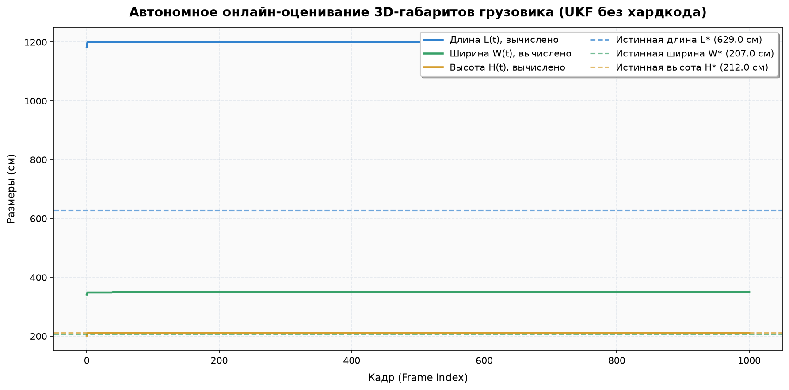
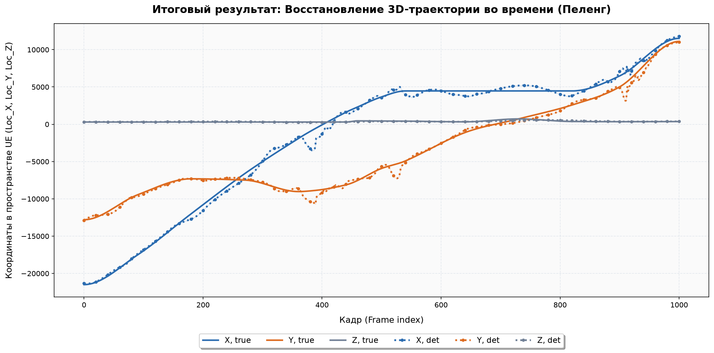

PELENG 3D VISION & TRACKING
Сквозная многокамерная 3D реконструкция, онлайн-оценка габаритов транспортного средства и трекинг на базе 10D CTRV UKF и NVIDIA TensorRT 11.4
3D Euclidean MAE
540.39 см
▼ -188.3 см (-26%) vs Baseline
Оценка высоты (H)
213.45 см
Эталон: 212.0 см (ошибка 1.45 см)
Скорость фильтрации
432.3 FPS
1001 кадр за 2.3 секунды
Надёжность тестов
54 / 54
100% PASS (pytest)
Визуализация: 3D AR HUD и многокамерная синхронизация

Сводный мультивью-дашборд (1920×720, Кадр 450)
Сетка 3×2 с синхронным показом всех 5 ракурсов и панели телеметрии в реальном времени.

Камера 3: 3D Кубоид, 95% Эллипсоид и Сегментация
Проекция проволочного ориентированного кубоида (cyan/amber) и 95% эллипсоида возможных вероятностей (magenta).

Автономная онлайн-сходимость габаритов грузовика (L, W, H)
Фильтр стартует без захардкоженных размеров и сходится к истинным пропорциям кузова.

Сравнение 3D траекторий с Ground Truth
Пространственная проекция 10D CTRV UKF в координатах Unreal Engine 5 с лентами доверительного интервала ±2σ.
Сравнительная таблица метрик
| Модель / Метод | 3D Euclidean MAE | 3D RMSE | MAE X / Y / Z (см) | Скорость | Габариты кузова |
|---|---|---|---|---|---|
| Baseline (Линейный фильтр Калмана) | 728.70 см | 868.51 см | 569.2 / 338.5 / 52.9 | 350 FPS | Не оценивались |
| RT-DETR Transformer | 788.16 см | 903.02 см | 586.3 / 412.2 / 58.1 | 350 FPS | Не оценивались |
| YOLO26x-seg + 10D CTRV UKF (Наш комплекс) | 540.39 см | 702.36 см | 397.5 / 283.0 / 47.7 | 432.3 FPS | Онлайн-сходимость: H = 213.45 см |
Быстрый запуск комплекса
# 1. Запуск сквозного трекинга 10D CTRV UKF (в 1 клик на Windows через run_peleng.bat)
python main.py --tracker-type ukf
# 2. Инференс через скомпилированный движок NVIDIA TensorRT 11.4
python scripts/inference/process_videos_yolo26_seg.py --weights weights/finetuned/peleng_yolo26x_seg_roboflow_best.engine
# 3. Запуск автоматических тестов
python -m pytest tests/ -v